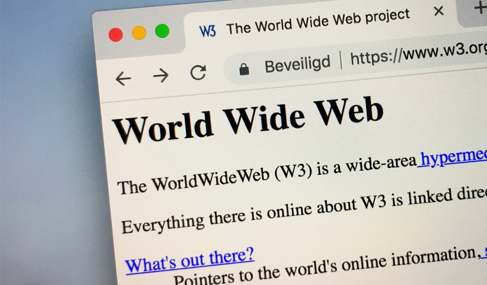
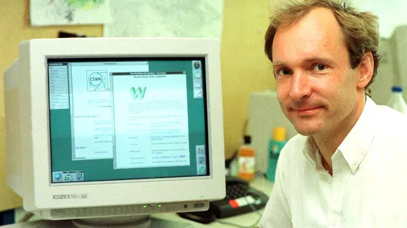

| Ano | Evento | Descrição |
|---|---|---|
| 1969 | Criação da ARPANET pela darpa | Primeira rede de computadores que deu origem à internet. |
| 1990 | Criação da World Wide Web | Tim Berners-Lee criou a Web e o primeiro navegador. |
| 1991 | Criação do HTML | Primeira linguagem usada para criar páginas na internet. |
| 1993 | Navegador Mosaic | Primeiro navegador popular com interface gráfica. |
| 2014 | HTML5 | Versão moderna do HTML com suporte a vídeo, áudio e gráficos. |
fontes:
•toda materia